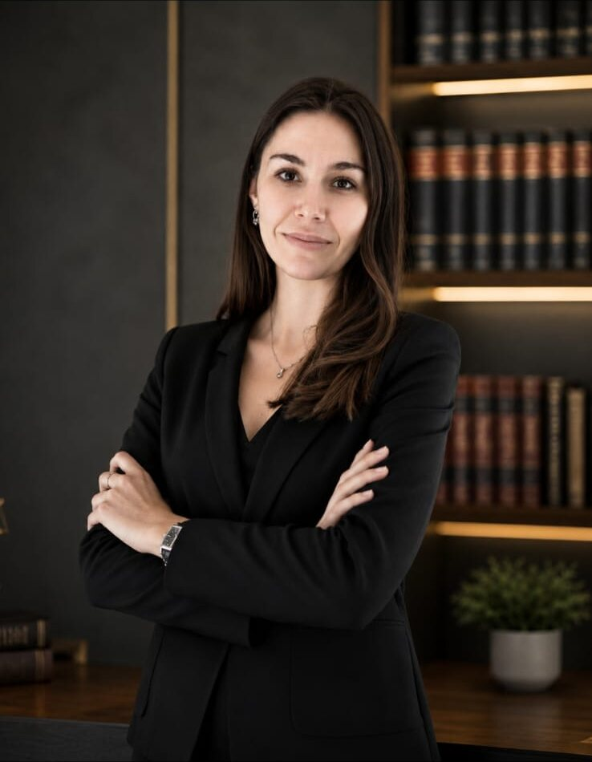
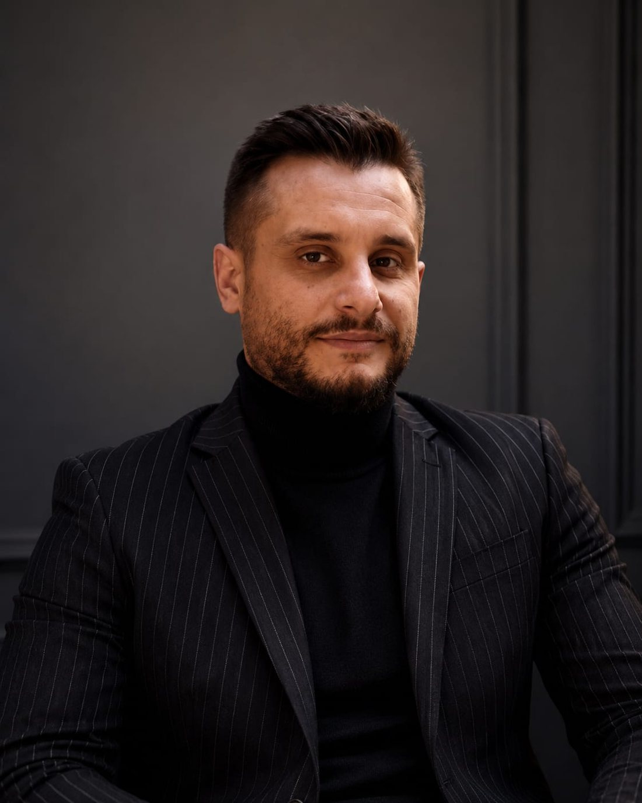

Gizlilik
Confidentiality
Paylaştığınız her bilgi, mesleki gizlilik ilkesiyle titizlikle korunur.
Every piece of information you share is carefully protected by professional confidentiality.
Hukuki riskleri öngören, değerleri güvence altına alan ve her süreci stratejik bakış açısıyla yöneten bir hukuk anlayışı benimsiyoruz.
We embrace a legal approach that anticipates risks, safeguards what you value and manages every process with a strategic perspective.

İstanbul Üniversitesi Hukuk Fakültesi mezunu olan Av. Sinem Şentürk, avukatlık kariyerine İstanbul merkezli hukuk bürolarında başlamıştır. Türk Patent ve Marka Kurumu nezdinde sicile kayıtlı marka vekili olarak, mesleki pratiğini başta fikri ve sınai haklar ile marka hukuku olmak üzere; aile hukuku, yabancılar hukuku ve iş hukuku alanlarında geliştirmiştir.
A graduate of İstanbul University Faculty of Law, Av. Sinem Şentürk began her career at İstanbul-based law firms. As a trademark attorney registered before the Turkish Patent and Trademark Office, she has developed her practice primarily in intellectual property and trademark law, alongside family, immigration and labor law.
Fikri ve sınai haklar kapsamında marka başvuru ve tescil süreçleri, marka ihlalleri, marka iptal ve hükümsüzlük davaları ile Fikir ve Sanat Eserleri Kanunu kapsamındaki uyuşmazlıklara ilişkin çalışmalar yürütmektedir. Ayrıca yabancılar hukuku kapsamında ikamet, çalışma izni ve vatandaşlık süreçleri ile aile ve iş hukuku alanlarında dava ve danışmanlık hizmeti sunmaktadır.
Within intellectual property, she handles trademark applications and registrations, infringement matters, cancellation and invalidity actions, and disputes under the Law on Intellectual and Artistic Works. She also advises and litigates on residence, work permit and citizenship processes within immigration law, as well as family and labor law.
Her dosyayı kendi dinamikleri içinde değerlendirerek, müvekkillerine güvenilir, stratejik ve çözüm odaklı hukuki destek sunmayı ilke edinmiştir. Bugün Şentürk Marka ve Hukuk Bürosu'nun kurucu avukatı olarak yerli ve yabancı müvekkillere danışmanlık ve temsil hizmeti vermektedir.
Evaluating each file on its own dynamics, she is committed to providing reliable, strategic and solution-focused legal support. Today, as the founding lawyer of Şentürk Law & IP, she serves both local and international clients with advisory and representation services.
Görüşme Talep EtRequest a MeetingPaylaştığınız her bilgi, mesleki gizlilik ilkesiyle titizlikle korunur.
Every piece of information you share is carefully protected by professional confidentiality.
Süreç boyunca düzenli olarak bilgilendirilirsiniz.
You are kept regularly informed throughout the process.
Amacımız, her dosyada hedefe götüren en doğru ve uygulanabilir stratejiyi kurmaktır.
Our aim is to build the most accurate, actionable strategy that reaches the goal in every file.
Her dosyaya gereken zamanı, emeği ve dikkati eksiksiz sağlarız.
We devote the time, effort and attention each file deserves, in full.
Verdiğimiz sözün arkasında durur, müvekkilimizle kurduğumuz güven ilişkisini kalıcı kılarız.
We stand behind our word and make the trust we build with our clients lasting.
Yerli ve yabancı müvekkillere, uluslararası süreçlerde de yanlarında olarak hizmet sunarız.
We serve local and international clients, standing by them in cross-border processes too.
Farklı uzmanlık alanlarını bir araya getiren kurucularımızla, müvekkillerimize bütüncül hukuki destek sunuyoruz.
Bringing together complementary areas of expertise, our founders provide holistic legal support to our clients.
İstanbul Üniversitesi Hukuk Fakültesi mezunu. Türk Patent ve Marka Kurumu sicile kayıtlı marka vekili. Marka, tasarım ve coğrafi işaret tescili ile fikri mülkiyet uyuşmazlıklarında uzman.
Graduate of İstanbul University Faculty of Law. Trademark attorney registered before the Turkish Patent and Trademark Office. Focused on trademark, design and geographical indication registration and IP disputes.

İstanbul Üniversitesi Hukuk Fakültesi mezunu olan Av. Yasin Emre Özbaş, ağırlıklı olarak ceza hukuku alanında faaliyet göstermektedir. Bugüne kadar çok sayıda ceza soruşturması ve ceza davasında vekillik ve müdafilik görevini üstlenmiş; bunun yanı sıra kira uyuşmazlıkları ve gayrimenkul hukukundan kaynaklanan uyuşmazlıklarda dava ve hukuki danışmanlık hizmeti sunmuştur.
A graduate of İstanbul University Faculty of Law, Av. Yasin Emre Özbaş practices primarily in criminal law. He has acted as counsel and defense attorney in numerous criminal investigations and trials, and also litigates and advises on tenancy disputes and real estate law matters.
Mesleki yaklaşımının temelini müvekkilleriyle kurduğu güvene dayalı ve şeffaf iletişim oluşturmaktadır. Her dosyayı kendi hukuki ve fiilî özellikleri çerçevesinde titizlikle değerlendirerek, müvekkillerinin hak ve menfaatlerini en etkin şekilde koruyacak hukuki stratejileri belirlemektedir.
His professional approach is grounded in trust-based, transparent communication with his clients. He carefully evaluates each file within its own legal and factual context, shaping the strategies that protect his clients' rights and interests most effectively.
Ceza yargılamasının her aşamasında edindiği tecrübe doğrultusunda, çözüm odaklı yaklaşımı ve güçlü savunma stratejileriyle müvekkillerine güvenilir hukuki destek sunmaya devam etmektedir.
Drawing on experience gained at every stage of criminal proceedings, he continues to provide reliable legal support through a solution-oriented approach and strong defense strategies.
Durumunuzu birlikte değerlendirelim; size en doğru yolu açıklıkla anlatalım.
Let's assess your situation together and explain the best path forward, clearly.
İletişime GeçinContact Us